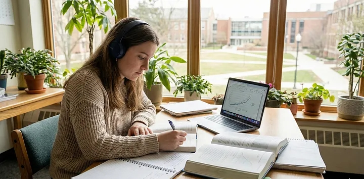

My Journey to Personal Growth
1. Study Smarter, Not Harder

Studying is an important part of every student's
life. However, distractions from mobile phones,
social media, and the surroundings can affect
concentration. Developing good study habits
can help students become more productive.
Creating a comfortable study environment,
organizing learning materials, and setting
realistic goals are effective ways to improve
focus and manage time.
2. Start Coding Today

Learning how to code is a great way to develop
technical knowledge and skills. Programming
helps students understand how websites and
applications work.
Beginners can start with HTML and CSS before
exploring other programming languages.
Through practice and patience, coding can
become an enjoyable learning experience.
3. Healthy Habits, Happy You

Academic success is important, but maintaining
a healthy lifestyle is equally valuable.
Physical and mental well-being can influence
a student's ability to learn and perform.
Getting enough sleep, eating balanced meals,
drinking water, and participating in physical
activities are simple habits that can support
a healthier daily routine.
Conclusion: A Better Version of Myself
Personal growth requires discipline, patience,
and consistency. By developing better study
habits, exploring coding, and maintaining
a healthy lifestyle, students can become
more productive and balanced individuals.
Every small step contributes to personal growth.